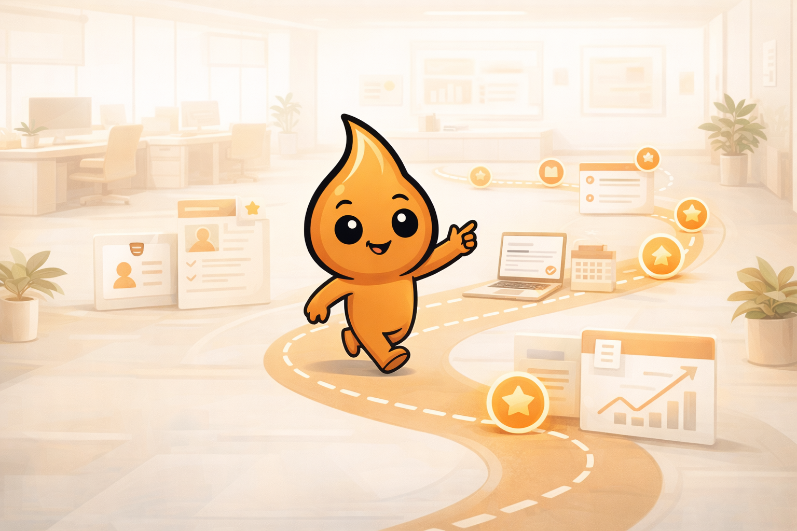

Entender o que é o Bóris
O Bóris existe para transformar conversa dispersa em leitura útil, contexto e decisão melhor dentro do universo de WhatsApp.
Equipe interna · Manual vivo
Manual interno do Bóris
Este onboarding não é um manual técnico. Ele existe para contextualizar a operação do Bóris, mostrar como a equipe realmente trabalha hoje e deixar claro o que uma pessoa nova precisa fazer desde o começo.
Visão geral
Quem entra no time precisa entender o negócio, o momento atual e a dinâmica da equipe. Sem isso, qualquer tarefa vira execução sem contexto.
O Bóris existe para transformar conversa dispersa em leitura útil, contexto e decisão melhor dentro do universo de WhatsApp.
O time ainda está consolidando operação, produto, comercial e conteúdo ao mesmo tempo. Isso exige clareza, prioridade e jogo de cintura.
A primeira semana precisa mostrar com quem falar, o que observar, onde o trabalho acontece e qual entrega pequena faz sentido.
O Bóris é um negócio focado em leitura operacional de grupos e comunidades no WhatsApp. O valor central é menos ruído e mais clareza.
O time ainda está amadurecendo produto, oferta, narrativa e processos. Quem entra ajuda a organizar e acelerar, não só a cumprir demanda.
A expectativa inicial é simples: entender o contexto, observar o funcionamento do time e fazer uma entrega pequena com boa orientação.
Módulos por área
Em vez de explicar ferramenta ou processo técnico, estes módulos mostram como cada frente do Bóris funciona hoje e o que uma pessoa nova precisa entender para entrar bem em cada contexto.
Explica a tese do Bóris, o problema que ele resolve e como o time enxerga valor de produto hoje.
Explica a lógica comercial atual, o tipo de venda que funciona e o que nunca pode se perder nas conversas com leads.
Explica o tom do Bóris, de onde nasce a narrativa e como transformar dor real em conteúdo e material útil.
Explica a rotina prática do time, os combinados, a forma de acompanhamento e o que ajuda o trabalho a continuar sem caos escondido.
O que o Bóris é
Essa distinção ajuda muito no começo. Sem ela, a pessoa nova corre o risco de ler o Bóris como “mais uma IA genérica” ou “mais uma automação”, o que distorce o trabalho desde a origem.
Dia a dia
Este bloco existe para responder uma dúvida simples: “o que exatamente acontece aqui?”. Entrar no Bóris hoje significa conviver com produto, comercial, conteúdo e operação andando ao mesmo tempo.
O time passa boa parte do tempo tentando transformar conversa, reunião, sinal de mercado e execução em leitura clara para decidir melhor.
O Bóris ainda está amadurecendo produto e posicionamento juntos. Então é comum que uma mesma semana misture ajuste de tela, tese, oferta e material.
Não é só responder lead. É entender timing, manter follow-up vivo, organizar oportunidades e fazer a conversa andar com próximo passo claro.
O conteúdo do Bóris nasce de problema concreto de operação, comunidade, suporte, retenção e WhatsApp. Não é produção vazia para “manter presença”.
Check-ins, registros, handoffs e decisões precisam sair da cabeça das pessoas e virar algo que o time consiga retomar depois.
O ritmo do Bóris hoje é esse: fazer, observar, ajustar e subir aprendizados úteis para a próxima rodada.
Momento atual
Isso é importante para quem entra: hoje o trabalho envolve construir, organizar e aprender ao mesmo tempo. Ainda tem muita coisa sendo ajustada enquanto a operação anda.
O link público oficial já está consolidado em `euboris.com.br`, e o space já está organizado em cinco frentes: produto, comercial, conteúdo, operações e suporte.
A oportunidade com ENAP e ecossistema de inovação pública já está sendo tratada como frente real. Hoje ela mistura visibilidade, subvenção, networking e amadurecimento de caso de uso.
A linha editorial já está produzindo peças completas. Exemplos recentes falam de follow-up sem prioridade, promessa esquecida e pagamento sem contexto, sempre ancorados em dores reais da operação.
Equipe hoje
Neste momento, a operação do Bóris ainda não tem um time grande montado. O centro do projeto hoje é o Mateus Rocha, que na prática segura quase tudo, com apoio próximo do Rodrigo Richter em ideias de gamificação e da Camila Meireles nas frentes de divulgação.
Hoje o Mateus faz praticamente tudo no Bóris: segura a visão do negócio, puxa produto, direção geral, prioridade entre frentes, articulação do projeto e as decisões mais importantes do dia a dia.
Hoje o Rodrigo está ajudando o projeto com conversas, trocas de ideia e especialmente com pensamento de gamificação para aplicar no painel e no Bóris futuramente.
A Camila está começando a ajudar o Bóris na parte de divulgação, especialmente com landing pages, ads e frentes de aquisição.
Isso importa para quem entra: muita coisa ainda depende de alinhamento direto, contexto bem passado e proximidade com quem está puxando o projeto.
Faz sentido procurar o Mateus quando a dúvida envolve direção do Bóris, visão do negócio, prioridade entre frentes ou praticamente qualquer decisão mais importante do projeto neste momento.
Faz sentido procurar o Rodrigo quando a conversa estiver girando em torno de ideias, possibilidades e caminhos de gamificação para o painel e para o futuro do Bóris.
Contato: +55 11 99128-9263
Faz sentido procurar a Camila quando a conversa estiver ligada a divulgação, landing pages, ads e possibilidades de aquisição para o Bóris.
Contato: +55 61 9273-7514
Como o time ainda está pequeno, é natural que dúvidas sobre produto, comercial, conteúdo e operação precisem de alinhamento mais próximo no começo.
Primeiros 7 dias
O objetivo não é jogar ferramenta e documento em cima da pessoa. É ajudá-la a entender o Bóris, o momento atual do time e a forma certa de começar a contribuir.

A primeira boa conversa de onboarding é sobre o que o Bóris faz, para quem ele existe e por que isso importa agora.
A segunda conversa deve explicar a área em que ela entra, como essa área se mede e o que o time considera bom trabalho ali.
Antes de entregar qualquer coisa, a pessoa precisa saber qual é a menor entrega útil que ajuda o time sem gerar retrabalho.
Quem faz o quê
Esta parte ainda está estruturada por função porque os nomes podem mudar, mas a lógica aqui é simples: mostrar como a equipe se divide e como o trabalho circula.

Guarda a visão do Bóris, decide prioridade, valida narrativa e mantém a barra de qualidade.
Transforma interesse em conversa qualificada, organiza pipeline e evita oportunidade perdida.
Converte dores reais em materiais, campanhas e mensagens com identidade consistente.
Sustenta ritos, documentação, handoffs e continuidade entre combinado e entregue.
Onde o trabalho acontece
Esta seção não existe para ensinar ferramenta em profundidade. Ela existe para mostrar o mapa prático do trabalho e onde cada coisa costuma acontecer no dia a dia.
É onde o time organiza contexto, histórico, materiais internos e trabalho em andamento.
É a camada pública do Bóris, usada para narrativa institucional e comercial. Não é onde vive o onboarding interno.
É a camada de produto autenticado. Quando alguém precisa ver o Bóris em operação real, é aqui que essa leitura tende a acontecer.
É onde ficam materiais compartilhados, referências, propostas, conteúdo e base viva da marca e da operação.
Rituais e combinados
O que faz alguém entrar bem no Bóris não é dominar ferramenta logo no primeiro dia. É entender o ritmo, o tipo de atualização e a forma como o time toma cuidado com clareza e continuidade.

Atualizações curtas, com progresso, bloqueio e próximo passo. O foco é clareza, não performance verbal.
Quando algo passa a ser importante para a operação, isso precisa ficar acessível para o time, e não preso só em conversa.
Quem entra no Bóris não precisa provar genialidade. Precisa ganhar contexto e começar a ajudar de forma concreta.
FAQ operacional
Este fechamento serve para responder as dúvidas que normalmente aparecem quando a pessoa já entendeu o panorama, mas ainda não sabe como se posicionar dentro dele.
Pelo problema que o Bóris resolve, pelo mapa do ecossistema e pelo entendimento de quem responde por cada frente.
Ainda na primeira semana, com escopo pequeno e revisão próxima, para acelerar autonomia sem jogar a pessoa no escuro.
Plugando nomes reais, links oficiais, checklists por área e trilhas específicas sem precisar refazer a arquitetura.